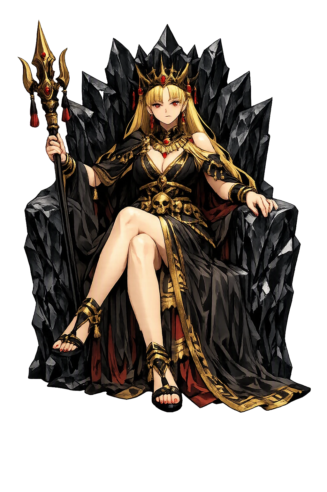
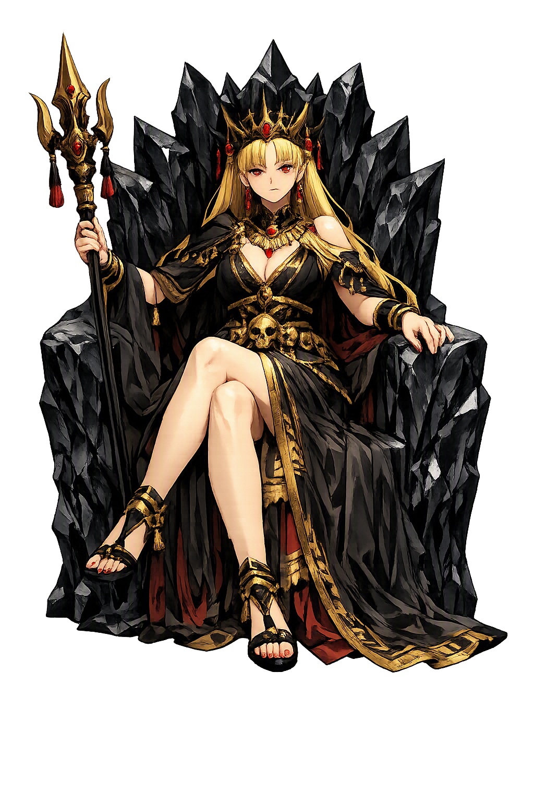

Stories of Ereškigal
Ereškigal's dossier is small and every entry is fatal. She appears as judge, widow, and finally wife — the sister who stayed below while Inanna ruled above. Her myths survive in three great texts and a scatter of incantations, and they agree on one thing: in her house, the rules are hers.
In the Sumerian Descent of Inanna (ETCSL 1.4.1), Inanna announces she will descend to witness the funeral rites of Gugalanna — Ereškigal's husband, the Bull of Heaven. At each of the seven gates she is stripped of her regalia, and before the throne of the dead she is tried by the Anunnaki. It is Ereškigal who pronounces the sentence: 'Then Ereškigal fastened on Inanna the eye of death. She spoke against her the word of wrath. She uttered against her the cry of guilt… Inanna was turned into a corpse, a piece of rotting meat, and was hung from a hook on the wall.' The Akkadian Descent of Ishtar retells the scene with the same economy. The myth means that Ereškigal's power is the exact mirror of her sister's: where Inanna strips the land of protection by leaving it, Ereškigal strips the intruder of identity — the gaze of the queen below is the one power even heaven cannot outrank.
The myth of Nergal and Ereškigal — preserved in an Amarna tablet (EA 357, c. 1350 BCE) and a longer Middle Assyrian recension — begins with an insult at the gods' banquet. Ereškigal sends her vizier Namtar up to collect her portion, and every god rises before him except Nergal, the plague-god of war. Ereškigal demands he be sent down to die. Warned by Ea, Nergal arms himself with the seven demons and descends; at each gate he breaks the porter's defenses, and at the throne Ereškigal offers him the seat beside her — whereupon, in the Amarna version's abrupt close, he becomes her husband and king of the netherworld. The Assyrian recension adds the clause that splits the rule: Nergal reigns six months of the year below, Ereškigal the other six, and Namtar the vizier runs the kingdom in each absence. The myth means that the underworld, like every Mesopotamian institution, is completed by a marriage of powers: plague weds dust, and the Great Below gains its king.
In the Sumerian tale Gilgameš and the Bull of Heaven and its epic retelling (tablets VI–VII of the Epic of Gilgamesh), Gugalanna — 'the Bull of Heaven,' Ereškigal's husband — descends on Uruk at Ištar's demand and is slain by Gilgameš and Enkidu; Enkidu tears out the bull's heart and hurls the haunch back at heaven. The Sumerian version makes the consequence explicit: when Inanna descends to the netherworld, she says she has come for the funeral rites of Gugalanna; and in the epic, Enkidu's dream of the underworld names Ereškigal as the queen who will demand satisfaction. The gods decree Enkidu's death for the insult done to the goddess and the slaying of the bull — 'a corpse for a corpse,' as the formula runs. The myth means that Ereškigal's marriage makes the Bull of Heaven kin to the pantheon above: to kill her husband is to incur a family debt payable only in the currency of the dead.
Beyond the three great narratives, Ereškigal lives in the incantation corpus — the vast body of exorcistic texts by which the ashipu-priest drove demons from the sick. In these rituals she is invoked not as villain but as the sovereign whose boundary the demon has violated: the exorcist formally hands the affliction over to her jurisdiction, 'to the gate of Ereškigal, who has no rival,' and commands the demon back across the frontier of the dead. As prayer and incantation to her became more prominent in the first millennium BCE, her cult presence grew even as her mythology stayed thin. The tradition means that fear itself was her worship: the exorcist does not love the queen below but needs her law, and every cure is a deportation to her realm.
Sovereign of the Netherworld, the Land of No Return
Ereškigal is the queen of the Great Below — the sovereign of the land of no return, where the dead eat dust and clay and the living enter only by her law. Sister of Inanna and wife of the plague-god Nergal, she rules the seven-gated city of the dead with a word that admits no appeal. Her mythology is sparse but absolute: everything that is known about her comes from the few who came back.
Kur, the Great Below: her realm, entered through the seven gates, from which no living soul returns unransomed (Descent of Inanna, ETCSL 1.4.1).
The porters of her city strip every traveler of a garment at each gate — her sovereignty is absolute over all who enter, goddess or mortal.
The Anunnaki pronounce her verdicts; her decree of death admits no appeal — 'the word of Ereškigal' is the final court of the cosmos.
Her first husband, the Bull of Heaven; his slaying on earth at Gilgameš's hands leaves her grieving — and dangerous (Gilgamesh, tablets VI–VII).
From the original script to the living URL
𒀭𒊕𒆠𒃲
The name in its original Mesopotamian form. Ereškigal (𒀭𒊕𒆠𒃲) is attested in the source tradition — “Lady of the great earth”. Its original diacritics and script distinctions carry the full phonetic and orthographic weight of the source tradition.
ereshkigal
Reduced to plain ereshkigal, the name loses everything that made it specific: original diacritics and script distinctions. What remains is an ASCII string that machines can parse but that no longer speaks with its original voice.
Ereškigal
The Unicode restoration recovers what ASCII flattened. Ereškigal restores original diacritics and script distinctions, returning the name to its original written dignity. The domain encodes to Punycode, but the browser displays the truth.
Ereškigal.com → xn--erekigal-7wb.com
The non-ASCII characters in Ereškigal are encoded while the ASCII remains visible. To the DNS, it is Punycode. To humanity, it is Ereškigal.
Owned, ideal, and ASCII forms of Ereškigal
Ereškigal
Restores 𒀭𒊕𒆠𒃲. The live temple domain — ereškigal.com.
ereshkigal
Flattens 𒀭𒊕𒆠𒃲. The plain ASCII fallback — what DNS and legacy systems see.
How Ereškigal was spoken
How Ereškigal travels from ancient script to the modern URL
Sumerian ÉREŠ.KI.GAL “lady of the great earth"; queen of the Mesopotamian underworld.
Ereškigal is the sister who stayed. The mythic imagination gave Inanna everything — the sky, the morning star, the kingship of Uruk — and gave Ereškigal the room beneath the world, and then dared to ask which sister was stronger. The Descent answers without hesitation: Inanna arrives with the full regalia of heaven and leaves as meat on a hook; her return is not a victory but a ransom.
Enter Extended Lore